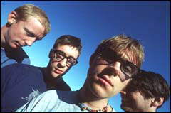

|  hello, this is lethargic, a page about blur. it's compiled of several things audio, video, links, chat, and more comming. feel free to contribute sounds, video, or anything really. hopefully you'll submit your favorite live clip, remix, or interview that you think others would like to hear. if you find find any broken links or if any of the info is wrong just mail me and if you have the time drop a message in my guest book. on with it. see for yourself. have a go. |
|---|
|
pages created by Jon Rohan |
sign my guest book veiw my guest book |
web ring |